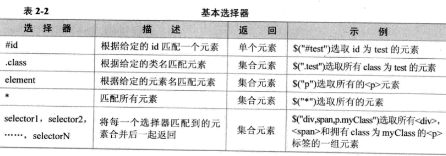

<1>什么是jQuery选择器
* jQuery中的选择器完全集成了CSS的风格。
* 利用jQuery选择器，可以非常便捷和快速地找出特定的DOM元素。
* 学会使用选择器是学习jQuery的基础。
<2>jQuery选择器的优势
* $( ) 函数在很多javascript类库中都被作为一个选择器函数来使用，在jQuery中也不例外。
* 支持CSS1到CSS3的选择器
jQuery选择器支持CSS1、CSS2的全部和CSS3的部分选择器，同时拥有少量独有的选择器。
使用jQuery选择器时无需考虑浏览器是否支持这些选择器。
* 完善的处理机制
<3>jQuery九大选择器
一、基本选择器

Demo:
//<input type="button" value="改变 id 为 one 的元素的背景色为 #0000FF" id="b1"/>
$("#b1").click(function(){
//css()方法里，改变样式的时候，参数一"background"里的值对应css里面的值
$( "#one").css("background" ,"#0000FF" );
});
//<input type="button" value=" 改变元素名为 <div> 的所有元素的背景色为 #00FFFF" id="b2"/>
$("#b2").click(function(){
$( "div").css("background" ,"#00FFFF" );
});
//<input type="button" value=" 改变 class 为 mini 的所有元素的背景色为 #FF0033" id="b3"/>
$("#b3").click(function(){
$( ".mini").css("background" ,"#FF0033" );
});
//<input type="button" value=" 改变所有元素的背景色为 #00FF33" id="b4"/>
$("#b4").click(function(){
$( "*").css("background" ,"#00FF33" );
});
//<input type="button" value=" 改变所有的<span>元素和 id 为 two 的元素的背景色为 #3399FF" id="b5"/>
$("#b5").click(function(){
$( "span,#two").css("background" ,"#3399FF" );
});
二、层次选择器

Demo:
//<input type="button" value="改变 <body> 内所有 <div> 的背景色为 #0000FF" id="b1"/>
$("#b1").click(function(){
$( "body div").css("background" ,"#0000FF" );
});
//<input type="button" value=" 改变 <body> 内子 <div> 的背景色为 #FF0033" id="b2"/>
$("#b2").click(function(){
$( "body>div").css("background" ,"#FF0033" );
});
//<input type="button" value=" 改变 id 为 one 的下一个 <div> 的背景色为 #0000FF" id="b3"/>
$("#b3").click(function(){
$( "#one+div").css("background" ,"#0000FF" );
});
//<input type="button" value=" 改变 id 为 two 的元素后面的所有兄弟<div>的元素的背景色为 # #0000FF" id="b4"/>
$("#b4").click(function(){
$( "#two~div").css("background" ,"#0000FF" );
});
//<input type="button" value=" 改变 id 为 two 的元素所有 <div> 兄弟元素的背景色为 #0000FF" id="b5"/>
$("#b5").click(function(){
$( "#two").siblings("div" ).css("background", "#0000FF");
});
三、基础过滤选择器

Demo:
//<input type="button" value=" 改变第一个 div 元素的背景色为 #0000FF" id="b1"/>
$("#b1").click(function(){
$( "div:first").css("background" ,"#0000FF" );
});
//<input type="button" value=" 改变最后一个 div 元素的背景色为 #0000FF" id="b2"/>
$("#b2").click(function(){
$( "div:last").css("background" ,"#0000FF" );
});
//<input type="button" value=" 改变class不为 one 的所有 div 元素的背景色为 #0000FF" id="b3"/>
$("#b3").click(function(){
$( "div:not('.one')").css("background" ,"#0000FF" );
});
//<input type="button" value=" 改变索引值为偶数的 div 元素的背景色为 #0000FF" id="b4"/>
$("#b4").click(function(){
$( "div:even").css("background" ,"#0000FF" );
});
//<input type="button" value=" 改变索引值为奇数的 div 元素的背景色为 #0000FF" id="b5"/>
$("#b5").click(function(){
$( "div:odd").css("background" ,"#0000FF" );
});
//<input type="button" value=" 改变索引值为大于 3 的 div 元素的背景色为 #0000FF" id="b6"/>
$("#b6").click(function(){
$( "div:gt(3)").css("background" ,"#0000FF" );
});
//<input type="button" value=" 改变索引值为等于 3 的 div 元素的背景色为 #0000FF" id="b7"/>
$("#b7").click(function(){
$( "div:eq(3)").css("background" ,"#0000FF" );
});
//<input type="button" value=" 改变索引值为小于 3 的 div 元素的背景色为 #0000FF" id="b8"/>
$("#b8").click(function(){
$( "div:lt(3)").css("background" ,"#0000FF" );
});
//<input type="button" value=" 改变所有的标题元素的背景色为 #0000FF" id="b9"/>
$("#b9").click(function(){
$( ":header").css("background" ,"#0000FF" );
});
//<input type="button" value=" 改变当前正在执行动画的所有元素的背景色为 #0000FF" id="b10"/>
function ca(){
$( "#mover").slideToggle("slow" ,ca);
}
ca();
$("#b10").click(function(){
$( ":animated").css("background" ,"red" );
});
四、内容过滤选择器

Demo:
//<input type="button" value=" 改变含有文本 ‘di’ 的 div 元素的背景色为 #0000FF" id="b1"/>
$("#b1").click(function(){
$( "div:contains(di)").css("background" ,"#0000FF" );
});
//<input type="button" value=" 改变不包含子元素(或者文本元素) 的 div 空元素的背景色为" id="b2"/>
$("#b2").click(function(){
$( "div:empty").css("background" ,"#0000FF" );
});
//<input type="button" value=" 改变包含含有 class 为 mini 元素的 div 元素的背景色为 #0000FF" id="b3"/>
$("#b3").click(function(){
$( "div:has(.mini)").css("background" ,"#0000FF" );
});
//<input type="button" value=" 改变含有子元素(或者文本元素)的div元素的背景色为 #0000FF" id="b4"/>
$("#b4").click(function(){
$( "div:parent").css("background" ,"#0000FF" );
});
//<input type="button" value=" 改变不含有文本 di; 的 div 元素的背景色" id="b5"/>
$("#b5").click(function(){
$( "div:not(:contains(di))").css("background" ,"#0000FF" );
});
五、可见度过滤选择器

//<input type="button" value=" 改变所有可见的div元素的背景色为 #0000FF" id="b1"/>
$("#b1").click(function(){
$( "div:visible").css("background" ,"#0000FF" );
});
//<input type="button" value=" 选取所有不可见的元素, 利用 jQuery 中的 show() 方法将它们显示出来, 并设置其背景色为 #0000FF" id="b2"/>
$("#b2").click(function(){
$( "div:hidden").show().css("background" ,"#0000FF" );
});
//<input type="button" value=" 选取所有的文本隐藏域, 并打印它们的值" id="b3"/>
$("#b3").click(function(){
var $hids = $( "input:hidden");
// for(var i=0;i<$hids.length;i++){
// alert($hids[i].value);
// }
/*
* $hids.each(function(index, domEle){});
* * 以每一个匹配的元素作为上下文来执行一个函数。
* * 回调函数：function(index, domEle){}
* * 参数一：index，索引值
* * 参数二：dom对象
*/
$hids.each(function(index, domEle){
//alert(domEle.value);
//alert($(domEle).val());
//alert(this.value);
alert($( this).val());
});
});
//<input type="button" value=" 选取所有的文本隐藏域, 并打印它们的值" id="b4"/>
$("#b4").click(function(){
var $hids = $( "input:hidden");
/*
* $.each($hids,function(index,domEle){});
* * 通用例遍方法，可用于例遍对象和数组。
* * each()方法
* * 参数一：需要例遍的对象或数组。
* * 参数二：回调函数：function(index, domEle){}
* * 回调函数：function(index, domEle){}
* * 参数一：index，索引值
* * 参数二：dom对象
*/
$.each($hids,function(index,domEle){
alert(domEle.value);
});
});
六、属性过滤选择器

//<input type="button" value=" 含有属性title 的div元素" id="b1"/>
$("#b1").click(function(){
$( "div[title]").css("background" ,"#0000FF" );
});
//<input type="button" value=" 属性title值等于test的div元素" id="b2"/>
$("#b2").click(function(){
$( "div[title=test]").css("background" ,"#0000FF" );
});
//<input type="button" value=" 属性title值不等于test的div元素(没有属性title的也将被选中)" id="b3"/>
$("#b3").click(function(){
$( "div[title!=test]").css("background" ,"#0000FF" );
});
//<input type="button" value=" 属性title值 以te开始 的div元素." id="b4"/>
$("#b4").click(function(){
$( "div[title^=te]").css("background" ,"#0000FF" );
});
//<input type="button" value=" 属性title值 以est结束 的div元素.." id="b5"/>
$("#b5").click(function(){
$( "div[title$=est]").css("background" ,"#0000FF" );
});
//<input type="button" value="属性title值 含有es的div元素." id="b6"/>
$("#b6").click(function(){
$( "div[title*=es]").css("background" ,"#0000FF" );
});
//<input type="button" value="选取有属性id的div元素，然后在结果中选取属性title值含有“es”的 div 元素" id="b7"/>
$("#b7").click(function(){
$( "div[id][title*=es]").css("background" ,"#0000FF" );
});
七、子元素过滤选择器

//<input type="button" value=" 每个class为one的div父元素下的第2个子元素" id="b1"/>
$("#b1").click(function(){
//子元素过滤选择器,使用时中间必须添加空格
$( "div[class=one] :nth-child(2)" ).css("background", "#0000FF");
});
//<input type="button" value=" 每个class为one的div父元素下的第一个子元素" id="b2"/>
$("#b2").click(function(){
//子元素过滤选择器,使用时中间必须添加空格
$( "div[class=one] :first-child" ).css("background", "#0000FF");
});
//<input type="button" value=" 每个class为one的div父元素下的最后一个子元素" id="b3"/>
$("#b3").click(function(){
//子元素过滤选择器,使用时中间必须添加空格
$( "div[class=one] :last-child" ).css("background", "#0000FF");
});
//<input type="button" value=" 如果class为one的div父元素下的仅仅只有一个子元素，那么选中这个子元素" id="b4"/>
$("#b4").click(function(){
//子元素过滤选择器,使用时中间必须添加空格
$( "div[class=one] :only-child" ).css("background", "#0000FF");
});
八、表单对象属性过滤选择器

//<input type="button" value=" 利用 jQuery 对象的 val() 方法改变表单内可用 <input> 元素的值" id="b1"/>
/*
* <input type="text" value="不可用值1" disabled="disabled">
<input type="text" value="可用值1" >
<input type="text" value="不可用值2" disabled="disabled">
<input type="text" value="可用值2" >
*/
$("#b1").click(function(){
$( "input[type=text]:enabled").val("xxxxxxxxxxx" );
});
//<input type="button" value=" 利用 jQuery 对象的 val() 方法改变表单内不可用 <input> 元素的值" id="b2"/>
$("#b2").click(function(){
$( "input[type=text]:disabled" ).val("xxxxxxxxxxx");
});
//<input type="button" value=" 利用 jQuery 对象的 length 属性获取多选框选中的个数" id="b3"/>
/*
* <input type="checkbox" name="items" value="美容" >美容
<input type="checkbox" name="items" value="IT" >IT
<input type="checkbox" name="items" value="金融" >金融
<input type="checkbox" name="items" value="管理" >管理
*/
$("#b3").click(function(){
alert($( "input[type=checkbox]:checked" ).length);
});
//<input type="button" value=" 利用 jQuery 对象的 text() 方法获取下拉框选中的内容" id="b4"/>
$("#b4").click(function(){
var $select = $( "select option:selected");
$select.each(function(index,domEle){
alert($(domEle).text());
});
});
九、表单选择器

//<input type="button" value=":input" id="b1"/>
$("#b1").click(function(){
$( ":input").each(function(index,domEle){
alert($(domEle).val());
});
});